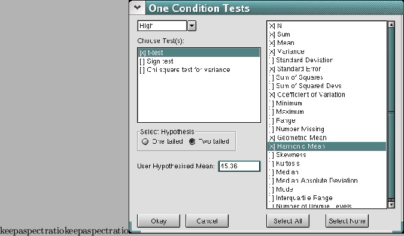

SalStat is very easy to use to analyse a single sample test (one sample tests are when you only have a single data set that you wish to compare against a mean). Go to the menu, click on ``analyse'', then ``1 Sample Tests...'', and a dialog box will appear.
At the top left hand side of this box, there is a drop down box. Clicking the arrow on the right hand side of the box will display a list of non-empty columns. Of course, if you have entered no data, then no columns will appear, so get rid of the box and enter some data! (but you knew that already, didn't you?)

Underneath this is a check list box like the 2 used when you got the descriptive statistics. To select a test, you will need to click on the small box to the left of the test, and it will be used to analyse your data.
If you only want the test result, there are 2 more things to do. The first is to select the tail of the hypothesis (more information in the chapter on analysing 2 sample tests). The 2 tailed hypothesis is kindly selected for you by default, and this seems to work for most analyses, although you can select a one tailed hypothesis if you are lucky enough to have evidence to support a claim for a directional hypothesis.
One sample tests differ from most others in that you are only looking at one data set. This leads to a problem of what are they being compared against, and the way to do this with SalStat is to enter what is termed a ``User Hypothesised Mean'' in the little text box underneath where you indicate the tail of your hypothesis. What this value is depends upon what you think the population mean is, and it is really up to you to decide what to use.
Once this is done, you can click the ``okay'' button, and the results will dutifully appear in the output window ready for your inspection! Simple, eh?
Of course, many people want to find out more information than just a test statistics (and p-value). On the right hand side of the window, there is a list of descriptive statistics (just like the one when you were getting descriptive statistics), but with both parametric and non-parametric tests present. Again, you can select which tests you want, or you can be completely greedy and get the lot by clicking on the button marked ``Select All'' at the bottom of the screen. When you are ready, click on ``okay''.